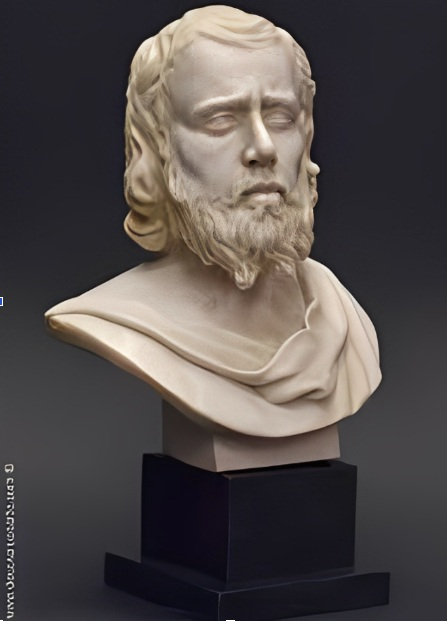

c. 50 d.C. – c. 135 d.C.
Epicteto
O escravo liberto
Epicteto nasceu escravo na Frígia, na Ásia Menor, e foi levado ainda jovem para Roma, onde serviu a um secretário do imperador Nero. Mesmo nessa condição, teve permissão para estudar filosofia estoica com Musônio Rufo.
Após ser libertado, passou a ensinar em Roma até que, quando os filósofos foram expulsos da cidade por ordem imperial, mudou-se para Nicópolis, na Grécia, onde fundou sua própria escola.
Epicteto nunca escreveu nada: assim como Sócrates, ensinava por meio de diálogo direto com os alunos. Tudo o que conhecemos de seu pensamento vem das anotações feitas por um discípulo, o historiador Arriano, reunidas nas "Diatribes" e no pequeno manual conhecido como "Encheirídion", ou "Manual".
Sua ideia central é simples de enunciar, mas exigente de praticar: algumas coisas dependem de nós — nossos julgamentos, desejos e ações — e outras não — nosso corpo, nossa reputação, os eventos externos.
A perturbação nasce de tentar controlar o que não está em nosso poder; a liberdade nasce de concentrar toda a atenção no que está. Essa distinção entre o que depende e o que não depende de nós tornou-se um dos conceitos mais citados de toda a filosofia estoica.
Epicteto insistia ainda que a filosofia não serve para impressionar os outros com teoria, mas para transformar a própria conduta — quem só discute os princípios sem aplicá-los, para ele, ainda não começou a filosofar de verdade.
Epicteto ensinava que não são os acontecimentos que perturbam as pessoas, mas o julgamento que fazemos sobre eles. — resumo do ensinamento atribuído a Epicteto